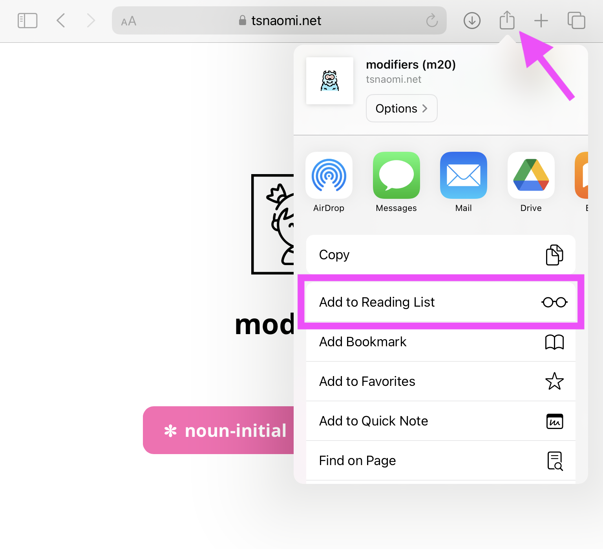

Iconic Remote – Info
Oaxaca 2024
Modifier experiment link: https://tsnaomi.net/iconic-remote-2024/m20
Current version: [v3.0]
Setting up for offline usage
Configure iPad settings
Ensure that Safari’s Reading List is stored offline: Go to
Settings > Safari, then scroll to the bottom and toggle on Automatically Save Offline under where it says “Reading List”.Ensure that downloads (participant responses!) are stored locally: Go to
Settings > Safari > Downloads, then select the On My iPad option.- It might be okay to store the files on iCloud Drive, but this really depends on your iCloud settings. The most important thing is that iCloud doesn’t try to automatically delete the files or lose track of the files during intermittent syncing.
Prevent downloads from automatically deleting: Go to
Settings > Safari > Downloads > Remove Download List Items, then select the Manually option.Disable tap-to-zoom: Go to
Settings > Accessibility > Zoom, then toggle off the topmost slider.
Save the experiment
Save the experiment link to Safari’s Reading List:
Connect to Wifi.
Navigate to the experiment page in Safari. (Do NOT start the experiment.)
Confirm that the buttons for the noun-initial and noun-final conditions are visible on the screen. This means that the experiment has loaded:
- Click the icon in the toolbar, then select Add to Reading List:

- Click the icon to open the sidebar:
- Navigate to the Reading List:
- Click on the experiment link in the Reading List, then keep refreshing the page until you see a version number—e.g., [v3.0]—appear in the Reading List:
- Ensure that it says “Show Unread” at the bottom of the Reading List. If it says “Show All”, click “Show All”. (Otherwise, completing the experiment will hide it from view!)
Confirm once more that the buttons for the noun-initial and noun-final conditions are visible on the experiment page. (This may take a minute while Safari caches the experiment.)
Close the experiment tab, followed by Safari, then disconnect from Wifi.
- For good measure, power down the iPad briefly!
Re-open Safari and navigate to the Reading List, then re-open the experiment.
Walk through the experiment to confirm that it works offline.
- If the experiment doesn’t run properly, reconnect to Wifi and try again.
Lastly: Add this page to the Reading List as well, then confirm that you can access it while offline.
Experiment versioning
The experiment version number in the Reading List should match the version number at the top of this document (assuming you’re connected to Wifi as you read this document). If the version number matches, then you have the latest version of the experiment loaded on the iPad. If the version number doesn’t match, reconnect to Wifi repeat steps 7–12 above.
Running the experiment
- Lock the screen in vertical (portrait) orientation; this will maximize the size of the stimuli. Also ensure that the iPad is NOT on silent:
- For additional screen room in Safari, open the toolbar and select “Hide Toolbar”:
Navigate to the Reading List in Safari and click on the experiment link. (Tip: Close all other tabs.)
Wait until the buttons for the noun-initial and noun-final conditions appear on the screen.
Click on the desired condition to launch the experiment.
Only assign participants to the noun-initial condition at first.
Once 10 participants qualify (⭐) in the noun-initial condition, switch to assigning participants to the noun-final condition. (It’s okay if it never gets to this point!)
Run the experiment with the participant:
Play the instructions for the participant. Demonstrate how to (re)play the audio and how to move forward.
After the initial screen of instructions, the audio plays automatically in the relevant trials.
On each instruction trial, the checkmark “proceed” button is disabled until the audio has played through once.
Walk through the 4 demo trials & 4 practice trials with the participant—in Mixtec, if possible. The demo & practice trials are identical.
The 4 demo trials should be completed by the experimenter. Demonstrate how to complete the different tasks. Show what it looks like to make a mistake and show how to use the blue backspace button in the keyboard trial.
The 4 practice trials should be completed by the participant. Encourage the participant to make mistakes and to try out the blue backspace button.
Assist the participant as needed throughout the study.
Once the participant completes the study and returns the iPad, click on the woman to access the “completion page”:

- The “completion page” lists the participant’s ID, condition, and qualification status. IMPORTANT! Save the participant’s responses by clicking the pink download button .
Record the participant’s ID, condition, and qualification status (⭐) on the paper questionnaire.
Click through the bottom >> arrows to navigate to the translation questions. (The completion & translation pages loop indefinitely, so don’t worry about being unable to navigate back to a previous page.)
Notetaking
On each non-instruction trial, the trial number is written in the bottom right corner of the screen. (In the demo, practice, and concept review trials, this number is prefixed with “d”, “p”, and “c” respectively.) These numbers are here to facilitate notetaking, in case anything noteworthy happens on a particular trial.
Viewing the responses
Use the Jayson app to view downloaded results. Each participant’s responses are stored in a file called <experiment-abbr>-v3-<participant-id>.json. (The participant IDs are randomly generated 3-character alphanumeric sequences.)
To email the responses (e.g., to view a desktop), go to Selectin the top right corner of the Jayson app, select the relevant files, then click Shareat the bottom. Tip: Make sure your WiFi is on :)